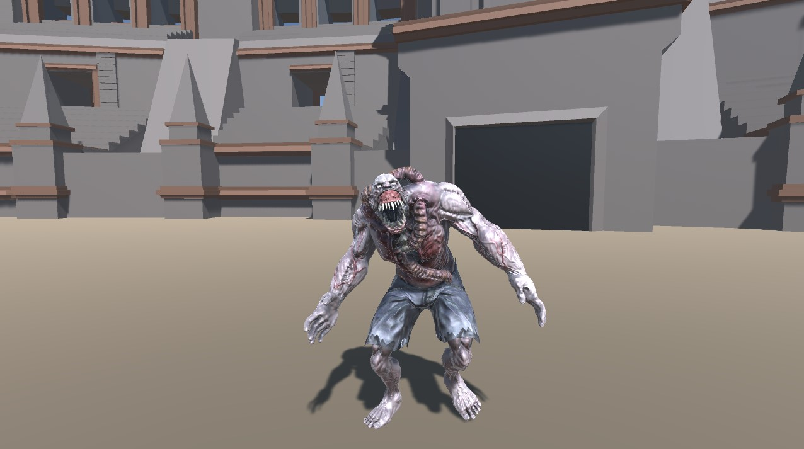
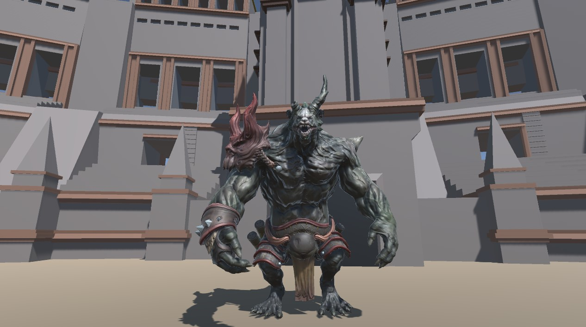
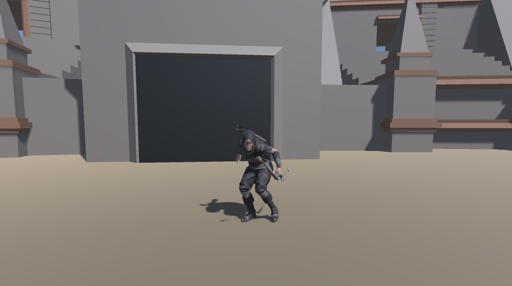

The Normal Enemy
These creatures are found in mass in Opela Arena trying to overwhelm the opponent. With their quick speeds and attacks it's important to keep a safe distance from you and their arms.
The Giant Enemy
Coming from being alpha predators in their home planet these behemoths can deal massive damage from a larger range but thanks to their mass are walking very slowly. Even though they could seem clumpsy with their chilled personality you don't want to meet them face to face, so keep dealing damage to them from a distance until they're gone.
The Ranged Enemy
With their small and quick capabilities these archers have very defensive playstyle which combined with their bow and arrows make them very difficult to track down. Use your spells to block their shots while you quickly close the distance to deal a more damaging blow.
